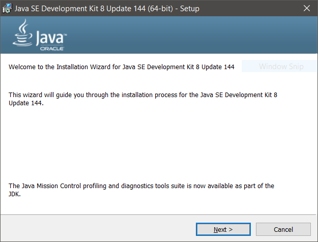
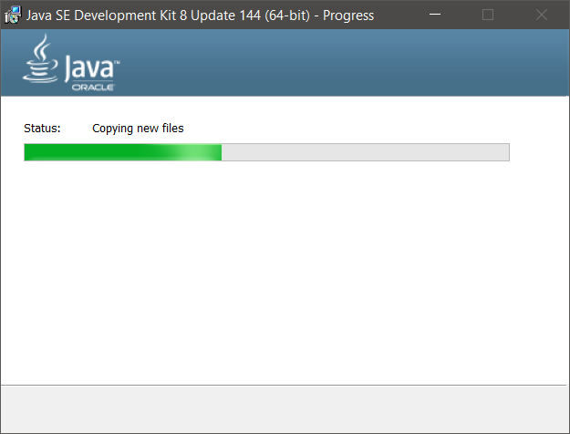
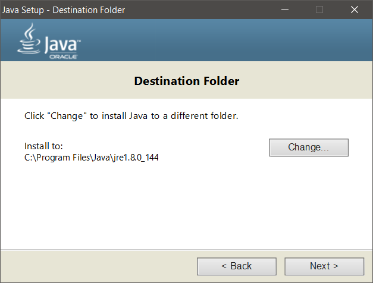
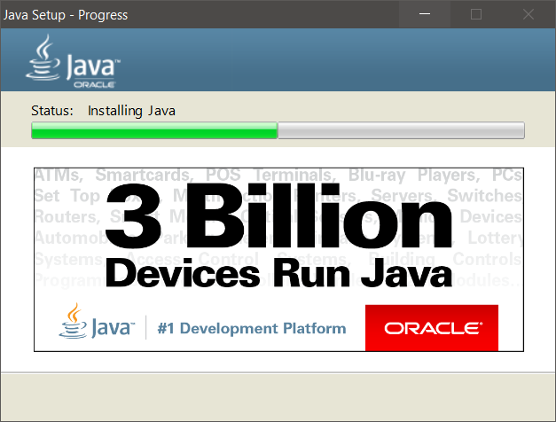

|
Installing Java is really just installing the libraries and the compiler. These things are put into a package called a JDK, or Java Development Kit.
A. Go to the Java JDK download page and select a JDK for your computerIn the first link selection article, click "Accept License Agreement" and click the link that corresponds with your system (Windows x86 and Windows x64)*.
|
|
This step is simple enough. Just run the installer and say OK to all the settings. If you are confident and want to tamper with a few install settings, do so at your own peril. Remember the directory you save Java to.





Editor Options
JCreator